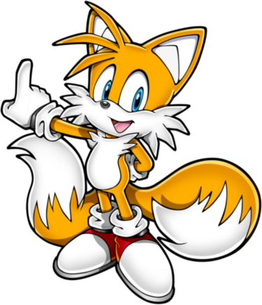
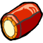
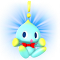
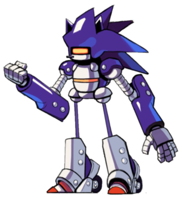
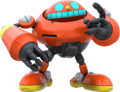
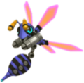
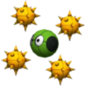

Paper Story @SAGE2025

Table of contents
As a way to celebrate trying to get Paper Story a booth for SAGE2025, the community has come together to create a small collection of Sonic-themed homebrew content for the game, including Species, new expanded Rules, and more!
While this content is not official, Deuce himself participated in a good chunk of it, and we can proudly present it to you all!
Species
As a way to encompass the wide variety of characters seen in the Sonic franchise, and offer a good framework for players to create OCs that fit the Sonic-style, we decided to create a unique "Mobian" species, with a number of options to customise them to your liking.
Mobian
Mobians are the most common inhabitants of Sonic's World, anthropomorphic animals with a variety of appearances and abilities. While most Mobians take from real-world mammals, they can also include birds, reptiles, and even aquatic creatures.
While not all Mobians are fighters by trade, their culture has for long been deeply intertwined with conflicts on a global scale, leading to a strong warrior ethos among many, and the courage to stand up against oppression.+1 Any Stat, +1 Courage
1 Power, 0 DefenseAt character creation, define the Mobian's specific animal type, as it will help determine their abilities and traits.
Pros
+ Athletics (Any)
Must be chosen at character creation. Examples include Brawn, Jump, Run…
+ Notice (Details)
or + Notice (Distant Vision)
or + Notice (Listen)
or + Notice (Scent)
+ Steady (VS Fear)
Up to 2 of the following:
1 Resist (Element)
This Element must be specified during character creation. This can be chosen twice with either the same or a different element.
Adapted (Any), Carrier, Fly, Hover or Resilient
Depending on what could makes sense for your character species.
The type of Adapted must be specified during character creation.Cons
Sinker
Unless the character has either Adapted (to some Water environment) or Fly.
Up to 2 of the following, and at least as much as you took Pros:
Weakness (Confuse, Provoke)
The Level and Duration of any of these Statuses inflicted on you is doubled.
Weakness (Noise)
The Level and Duration of all Statuses you suffer from sound-based sources is doubled.
Weakness (Scent)
The Level and Duration of all Statuses you suffer from scent-based sources is doubled.Tech Defaults
Aerial
Tool
Variant (Athletics)
+1 Custom SetCustom Sets are customisable Tech Defaults defined during character creation.
For Mobians, they can include any Traits totalling no more than 2 FP, but can't include negative Traits.Example Techniques
Weapon Strike (0 FP)
Attacks with a hand-held weapon.
Coordination: (Primary Check)
Auto: 1 DMG
Nice!: 2 DMG
Tool (Indirect)Dust Up (2 FP)
(Using Disorient as a Custom Set Tech Default)
Kicks sand in the enemy's face with speed and force, temporarily blinding them!
Athletics: (Secondary Check)
Nice!: Disorients (1) for 4 turns.
Good!: Disorients (2) for 4 turns.
Great!: Disorients (3) for 4 turns.
Wonderful!: Disorients (4) for 4 turns.
Variant (Athletics), Disorient x4, Harmless (Indirect), Situational (Common: Unusable without soil, sand, etc.)

Subspecies
Subspecies are means to further customise a character. A bunch of them are already available in the core rulebook, but we thought that Sonic deserved some unique ones around a specific theme.. Here comes Speed-Type-, Power-Type- and Fly-Type- Subspecies!
Speed-Type-
Speed-Type creatures have an affinity for speed that they can't control; in all avenues of life, they've just got to go fast, no matter the cost.
e.g. Sonic; Espio
[Type]
+1 Spirit, -1 Courage
Add
+ Athletics (Run)
+ Trickery (Dodge)
+ Steady (Balance)
Defense is reduced by 1
It also caps at 1 maximum.
Hover
If Fly is removed from the base species only.
Devotion (to Speed)
You cannot willingly use the Delayed Technique Traits in your Innate Techniques.Remove
Fly
Weakness (Air)Added Tech Defaults
Boost (Athletics)
Disorient
Hustle
+ Required: When Hustle is added as a Tech Default, add either Self or Split. Only the user can be targeted with Hustle.
Overrun
Swap x2Conditions
Can't be combined with another [Type] subspecies.

Power-Type-
Power-Type creatures are rougher than the rest of them, even the best of them; they're much stronger than they appear and are not to be messed with.
e.g. Knuckles; Vector
[Type]
-1 Spirit
+1 PowerAdd
+ Athletics (Brawn)
or + Bully (Brawn)
+ Coordination (Brawl)
+ Steady (Poise)
Carrier
Hover
If Fly is removed from the base species only.Remove
Fly
Weakness (Air, Earth, Crushing)Added Tech Defaults
Launch
Quake
Throw
Underfoot
Weaken (Defense)Conditions
Can't be combined with another [Type] subspecies.

Fly-Type-
Fly-Type creatures have conquered the skies, and are at home in the air. They can be a bit fragile on the ground, but they make up for it with their aerial prowess.
e.g. Tails; Rouge
-1 Heart, +1 Spirit
[Type]
Add
+ Aim (Bombard)
+ Athletics (Fly)
+ Trickery (Dodge)
+ Steady (Turbulance)
Carrier
HoverRemove
Weakness (Air)Added Tech Defaults
Aerial
Bestow (Fly)
Ranged
Secure (High Flying)Conditions
Can't be combined with another [Type] subspecies.
Final species must have Fly, Efficient (Flight) or + Magic (Flight).

You can always combine multiple Subspecies as long as you fit all the conditions to apply them, and the character's final Stats aren't reduced below 0. My Metal Sonic is a great example of this! He's a Speed-Type-, Metal- Mobian!

It can even make a big difference. Metal's sibling, Mecha Sonic Mark II is a Power-Type-, Mecha- Mobian. I even gave him a Specialization in GUNS!

Example Characters
Here are some example characters made using the Mobian species and Subspecies! They're made as Level 1 characters, and hopefully can inspire you.
Most of them also come as Google Sheets versions, so you can more easily copy them if you intend to use them.
Sonic the Hedgehog
Character by @plusdeuce
Google SheetsHP: 10 / 10
FP: 15 / 15
BP: 2 / 3
SP: 10 / 10
Level: 1Heart: 2
Spirit: 3
Courage: 1
Power: 1
Defense: 0Mobian (Speed-Type), Blue
Aim: 0
Athletics: 4 (+Run, +Spin)
Coordination: 0
Guard: 0
Heal: 0Crafts: 0
Knowhow: 0
Magic: 0
Notice: 1 (+Shortcuts)
Trickery: 2 (+Dodge)Bully: 0
Cheer: 0
Perform: 1 (+Stylish Moves)
Persuade: 0
Steady: 1 (+VS Fear, +Balance)Resilient
You can recover from KO with a Nice Steady check, reviving back up to 5 HP.
An extra Grade allows you to act immediately!
Required Grades incrase by 1 for each Resilient check made during an encounter.
Weakness (Scent)
The Level and Duration of all scent-based Statuses inflicted on you is doubled.
Sinker
Can't swim.
Devotion (to Speed)
You cannot willingly use the Delayed Technique Traits in your Innate Techniques.Tech Defaults
Boost (Athletics)
Aerial
Disorient
OverrunInnate Techniques
Spin Jump (0 FP)
Leaps through the air with blinding speed, homing in and piercing through enemy defenses!While hurtling through a Gale, this attack gains the Air element.
Under the effects of Sonic's own slipstream, this results in a bonus +2 Attack!Athletics (+Spin):
Good!: 1 Homing Piercing DMG
Great!: 2 Homing Piercing DMG
Aerial, Homing, Piercing, Unwieldy x2
+ Conditional (Must be in Gale Terrain): Element (Air)Rushing the Slipstream (5 FP)
Boosts through the enemy at mach speed, leaving a slipstream in his wake!This causes a Gale Terrain to form around Sonic and all grounded foes in the enemy group.
It may also leave the enemy Disoriented.Athletics (+Run):
Good!: 2 DMG
Trickery:
Good!: Gale Terrain (2) for 3 rounds, Disorient (1) for 2 turns.
Overrun, Disorient, Lengthen, Shared, Terrain (Gale) x2, Variant (Athletics), Commitment (Primary, Secondary), UnwieldyBadges
Timing Tutor
BadgeSkills
• 1 BP
Adds +1d6 to Stylish Moves checks.


I'm Sonic! Sonic the Hedgehog!
I'm in a strange new place with all sorts of weird creatures.
No doubt about it, Eggman's behind this!
I'd better track him down, and fast!
Tails "Miles" Prower

Character by @piyohthegenius
HP: 5 / 5
FP: 15 / 15
BP: 6 / 6
SP: 10 / 10
Level: 1Heart: 1
Spirit: 3
Courage: 2
Power: 1
Defense: 0Mobian (Fly-Type), Yellow
Aim: 2 (+Bombard)
Athletics: 1 (+Fly)
Coordination: 0
Guard: 0
Heal: 0Crafts: 2 (+Gadgets)
Knowhow: 2 (+Tattling)
Magic: 0
Notice: 0
Trickery: 0 (+Dodge)Bully: 0
Cheer: 2 (+Rally)
Perform: 0
Persuade: 0
Steady: 0 (+Turbulance)Fly
Hover
Carrier
Weakness (Scent)
The Level and Duration of all scent-based Statuses inflicted on you is doubled.Tech Defaults
Aerial
Tool
Secure (High Flying)
Boost (Crafts)Innate Techniques
Sky Drop (0 FP)
Grabs a target, then drops them down onto another.Aim (+Bombard):
Good!: 2 DMG
Aerial, Throw x2, Commitment (Primary), Unwieldy (Primary)Tails' Tips (1 FP)
Puts in extra effort in coming up with inventive ideas, boosting Crafts for himself or an ally by giving them so neat tips on crafting.Crafts:
Nice!: Boosts (Crafts) (1) for 3 turns.
Good!: Boosts (Crafts) (2) for 3 turns.
Great!: Boosts (Crafts) (3) for 3 turns.
Boost (Crafts) x3, HarmlessGear Techniques
Bomb Lob (0 FP)
From NapalmTosses a bomb at an enemy that explodes into a burst of fire, dealing both Blast and Fire damage.
Aim:
Nice!: 1 Blast Fire DMG
Good!: 2 Blast Fire DMG
Tool (Ranged), Element (Blast), Element (Fire), Unwieldy (Primary)Energy Shot (0 FP)
From Energy CannonFires an electric ball from an arm cannon.
Aim:
Nice!: 1 Shock DMG
Good!: 2 Shock DMG
Tool (Ranged), Element (Shock), Unwieldy (Primary)Heal (0 FP)
From Healing MachineUses a healing machine to restore HP.
Heal:
Nice!: +2 HP
Good!: +4 HP
Great!: +6 HP
Wonderful!: +8 HP
Hearty x4, Harmless (Indirect)Inventory
Napalm
GearBasicWeaponA small bomb that explodes into a small wall of fire when it explodes.
Gives access to the Bomb Lob Gear Technique.Tool (Ranged) Tech Default

Energy Cannon
GearBasicWeaponAn arm cannon that fires electrical shots.
Gives access to the Energy Shot Gear Technique.Tool (Indirect) Tech Default
Healing Machine
GearBasicGadgetA small drone with healing capabilities. Gives access to the Heal Gear Technique.
Hearty Tech Default

Cream the Rabbit
Character by @meineeds.rest
Google SheetsHP: 5 / 5
FP: 10 / 10
BP: 7 / 9
SP: 10 / 10
Level: 1Heart: 1
Spirit: 2
Courage: 3
Power: 1
Defense: 0Mobian (Fly-Type), Beige
Aim: 0
Athletics: 2 (+Fly)
Coordination: 0
Guard: 0
Heal: 1 (+Pure Heart)Crafts: 0
Knowhow: 0
Magic: 0
Notice: 2 (+Listen, +Lies)
Trickery: 0 (+Dodge)Bully: 0
Cheer: 2 (+Summoning)
Perform: 1
Persuade: 0
Steady: 1 (+VS Fear)Fly
Carrier
Hover
Resilient
You can recover from KO with a Nice Steady check, reviving back up to 5 HP.
An extra Grade allows you to act immediately!
Required Grades incrase by 1 for each Resilient check made during an encounter.
Weakness (Noise)
The Level and Duration of all Statuses you suffer from sound-based source is doubled.
Weakness (Confuse, Provoke)
The Level and Duration of any of these Statuses inflicted on you is doubled.Tech Defaults
Aerial
Ranged
Minion
Secure (High Flying)Innate Techniques
A-Are you okay?! (0 FP)
Prays for someone's well-being, reassuring herself in the process.Heal (+Pure Heart):
Good!: Heals 4 HP to the Target and You.
Great!: Heals 6 HP to the Target and You.
Hearty x3, Empower, Shared, Harmless, Others, UnwieldyHelp me, Cheese! (2 FP)
Summons your trusted Cheese Chao (and sometimes even Chocolat!) as an ally to fight alongside you.
The Chao can't attack on the turn they're called, and they stay up for 4 rounds, unless something happens to them..Cheer (+Summoning):
Nice!: Calls Cheese Chao to the field
Good!: Calls Cheese and Chocolat Chao to the field
Great!: Calls Super Cheese to the field; or both Cheese and Chocolat ChaoTier 1: Cheese Chao
(Or Chocolat Chao)5 HP, 1 Power, 1 Defense
Chao Rush: The Chao rushes towards the enemy, and hits them with their tiny fists, at quick speed, dealing 4 DMG.
(Strong)Fly
Weakness (Air)
+2 damage and becomes Disoriented (1) for turns equal to damage.Budget usage (5/5 points):
2 Points: HP, 1 Point: Power, 0 Points: Defense, 2 Points: Technique, 0 Points: TraitsTier 3: Super Cheese 
9 HP, 2 Power, 2 Defense
Dizzy Punch: Cheese winds up a wicked punch against whoever tries to harm Cream, unleashing it next turn, dealing 10 Piercing DMG and Dazing (2) the target for 2 turns.
(Strong x3, Daze x2, Piercing, Delayed, Exhausting)Resilient
Fly
Weakness (Air)
+2 damage and becomes Disoriented (1) for turns equal to damage.Budget usage (15/15 points):
4 Points: HP, 2 Points: Power, 2 Points: Defense, 5 Points: Technique, 2 Points: TraitsMinion x3, Lengthen, Harmless, Limitation (-2FP: No summon from this Technique already on the field)
Badges
Super Appeal
BadgeSkills
Adds +1d6 to Appeal checks.
Last Stand
BadgeDefense
When you have 5 or less HP, incoming attacks deal 1/2 as much Raw Damage.


Metal Sonic
Character by @lucydndprincess
Google SheetsHP: 15 / 15
FP: 0 / 0
BP: 4 / 6
SP: 10 / 10
Level: 1Heart: 3
Spirit: 0
Courage: 2
Power: 1
Defense: 0Mobian (Speed-Type, Metal), Blue
Aim: 0
Athletics: 2 (+Hover, +Fly)
Coordination: 0
Guard: 2 (+Melee)
Heal: 0Crafts: 0
Knowhow: 0
Magic: 0
Notice: 2 (+Details, +Tattling)
Trickery: 0Bully: 0
Cheer: 0
Perform: 0
Persuade: 0
Steady: 3 (+VS Fear, +Resilient)Immune (Fire, Water)
Your form softens, Weakening your Defense and Resist traits for a duration equal to the damage taken.
The Status Level begins at 1, and increases by 1 each time this is triggered, until the status is recovered from.
If your Defense and Resist traits are reduced to 0 by this status, treat this trait as Weakness (Fire, Water) for the duration instead.
Immune (Poison)
+2 Resist (Air, Blast, Earth, Ice)
Hover Resilient
Construct (Lifelike)
Weakness (Confuse, Provoke)
The Level and Duration of any of these Statuses inflicted on you is doubled.
Weakness (Shock)
You take on a Contact Trait, dealing Piercing Shock damage. The damage and duration are both equal to ½ the damage taken (minimum 1)
Devotion (to Speed)
You cannot willingly use the Delayed Technique Traits in your Innate Techniques.
SinkerTech Defaults
Variant (Athletics)
Boost (Defense) x2, Self
Secure (Metal Form)
HustleRequired: When Hustle is added as a Tech Default, add either Self or a single Split Slot (which can't contain Strikes). Only the user can be targeted with Hustle.
Innate Techniques
Ramping Speeds (0 FP)
Slam into your target, then build up speed for your next attack.
Athletics:
Good!: 2 DMG to the target
Athletics:
Nice!: Your are Hustled (1) for 1 turn.
Variant (Athletics), Commitment (Primary), Unwieldy, Limitation (Can't use Exceptional Techniques to change this Technique)
+ Split Slot (Hustle, Self)Black Shield (0 FP)
Protect yourself from all attacks.
Guard:
Good!: You become Secured and Immune to Fire, Shock and Water for 1 Turn.
Secure, Bestow x3, Harmless, Self, UnwieldyBadges
Peekaboo
BadgeSkills
Once per turn, you can make a Notice check as a free action.
For each Grade of Success, you can choose one enemy and learn their current and max HP.


Mecha Sonic Mark II

Character by @lucydndprincess
Google SheetsHP: 15 / 15
FP: 5 / 5
BP: 0 / 0
SP: 10 / 10
Level: 1Heart: 3
Spirit: 1
Courage: 0
Power: 3
Defense: 0Mobian (Power-Type, Mecha), Blue
Aim: 1 (+Guns)
Athletics: 3 (+Brawn, +Jump)
Coordination: 0
Guard: 0
Heal: 0Crafts: 0
Knowhow: 0
Magic: 0
Notice: 2 (+Details, +Tattling)
Trickery: 0Bully: 0
Cheer: 0
Perform: 0
Persuade: 0
Steady: 3 (+VS Fear, +Resilient)Immune (Charm, Fear, Poison, Provoke, Sleep)
+1 Resist (Air, Blast, Earth, Magic)
Hover Resilient
Construct
Weakness (Shock, Water)
You take +2 damage and become Confused (1) for a number of turns equal to the damage taken (minimum 1 turn).
SinkerTech Defaults
Aerial
Element (Blast)
Element (Shock)
Tool (Built-In)Optional: Element (Blast) on Indirect or Ranged attacks,
or Element (Shock) on attacks.Innate Techniques
Spin Jump (0 FP)
Curl into a spiky ball in the air and slam into a target of your choice.
Athletics (+Jump):
Nice!: 6 DMG to the target
Aerial, Indirect, CommitmentShock Dash (4 FP)
Coat yourself in electricity, rev up your wheels, and slam through your opponents.
Athletics:
Nice!: 6 Shock Damage to all enemies at your elevation.
Element (Shock), Variant (Athletics), Indirect, Overrun, Commitment
Dr Ivo "Eggman" Robotnik
Character by @plusdeuce
Google SheetsHP: 15 / 15
FP: 15 / 15
BP: 0 / 0
SP: 10 / 10
Level: 1Heart: 3
Spirit: 3
Courage: 0
Power: 2
Defense: 0Human (Bulky), Red
Aim: 0
Athletics: 1 (+Brawn)
Coordination: 1 (+Pilot)
Guard: 1
Heal: 0Crafts: 2 (+Machinery)
Knowhow: 1 (+Machinery)
Magic: 0
Notice: 0 (+Traps)
Trickery: 1 (+Bluffs)Bully: 2 (+Shove)
Cheer: 0
Perform: 0
Persuade: 0
Steady: 0Carrier
Eggman can carry those scrawny fools around with ease!Tech Defaults
Bestow
Minion
Throw
ToolRequired: Unwieldy (Primary) on attacks.
Innate Techniques
Throw Down (0 FP)
Once he's back into a corner, Eggman opts to get his hands dirty.Grabs and throws an enemy in melee into the closest other target, damaging them both.
Athletics (+Brawn):
Nice!: 2 DMG
Good!: 4 DMG
Throw, UnwieldyBadnik Barrage (5 FP)
Eggman's constantly working on his Badniks, and is ready to deploy them at a moment's notice.
A genius must be able to concentrate, though; deploying minions prevents Eggman from acting next turn.The Badniks don't attack on the turn they're deployed, and persist for 3 rounds afterwards – if they don't get scrapped first…
Crafts (+Machinery):
Nice!: Deploys one Egg Pawn
Good!: Deploys one Buzz Bomber; or Deploys two Egg Pawns
Great!: Deploys one Crabmeat; or Deploys three Egg Pawns
Wonderful!: Deploys one Orbinaut; or Deploys two Buzz Bombers; or Deploys four Egg PawnsTier 1: Egg Pawn 
3 HP, 1 Power, 1 Defense
Attacks in melee with an Egg Spear for 2 DMG; can reach airborne foes with ease.
(Reach, Tool (Indirect))Construct
Weakness (Shock)
+2 damage and becomes Confused (1) for turns equal to damage.Budget usage (5/5 points):
1 Point: HP, 1 Point: Power, 1 Point: Defense, 2 Points: Technique, 0 Points: Traits (Construct, Weakness)Tier 2: Buzz Bomber 
5 HP, 1 Power, 1 Defense
Attacks from above with a ranged blast, dealing 6 DMG.
(Strong x2, Ranged, Situational (Common: above Target))Fly
Construct
Weakness (Shock)
+2 damage and becomes Confused (1) for turns equal to damage.Budget usage (10/10 points):
2 Points: HP, 1 Point: Power, 1 Point: Defense, 4 Points: Technique, 2 Points: Traits (Fly, Construct, Weakness)Tier 3: Crabmeat
7 HP, 1 Power, 1 Defense
Scuttles up and fires two shots either side, dealing 4 DMG to two adjacent targets.
(Ranged, Scaling, Strong, Split (2nd Strike), Limitation (-1FP: Adjacent targets only))Construct
1 Resist (Water)
Adapted (Water)
Sinker
Weakness (Shock)
+2 damage and becomes Confused (1) for turns equal to damage.Budget usage (15/15 points):
3 Points: HP, 1 Point: Power, 1 Point: Defense, 8 Points: Technique, 2 Points: TraitsTier 4: Orbinaut 
7 HP, 2 Power, 2 Defense
Becomes Secure on its turn and prepares to counter melee attackers.
Deals 18 Piercing DMG to the next person to strike it in melee.
Can't act for a turn afterwards – giving their enemies an opening.
(Counter (Secure), Piercing, Scaling, Strong x4, Exhausting, Self)Hover
Construct
1 Resist (Blast)
Sinker
Weakness (Shock)
+2 damage and becomes Confused (1) for turns equal to damage.Budget usage (20/20 points):
3 Point: HP, 2 Points: Power, 2 Points: Defense, 11 Points: Technique, 2 Points: TraitsMinion x4, Variant (Crafts), Exhausting, Harmless, Shorten
Gear Techniques
Egg Wrecker (0 FP)
From Egg Mobile Mk1Swings a hefty wrecking ball from the base of the Egg Mobile!
Coordination (+Pilot):
Nice!: 3 DMG
Good!: 6 DMG
Tool (Indirect), Strong, UnwieldyInventory
Egg Mobile Mk1
GearBasicMechThe flagship of the Eggman Empire!
Provides Fly and Hover while piloted, as well as access to the Egg Wrecker Technique.
Despite its superior engineering, checks made to Fly can't score more than a Nice result.Also, it only has room for one in the cockpit. And no cup holder attachment? This won't do…
Tool (Indirect) Tech Default, Fly, Hover


On Star Power
Star Power isn't necessarily applicable for a game taking place in Sonic's World, but there's an easy way to reflavour it!
The Star Element can simply become the Chaos Element, representing power similar to that of the Chaos Emeralds, or even the Emeralds themselves.
Star Power (SP) itself can easily be reflavored as Emerald Power (EP).
Every ability that would normally ask or fill Star Power can simply be changed to Emerald Power. It simply represents the inherent potential of every creature to manipulate Chaos Energy, even without the use of actual Chaos Emeralds, although they can certainly be used to reinforce the max Emerald Power of the group.
Emerald Power specific abilities
// Something about using the Chaos Emeralds to do cool stuff, maybe even Super Forms in some way.
Inventory
// New Items, Badges, Gear, etc.
Items
// New Items
Badges
Spin Dash
BadgeTechnique
• ??? Coins
Bestows the use of the Spin Dash (? FP) Technique. If you have multiple Spin Dash Badges, you can use them together by spending 1 FP for each additional Badge.
Treat [X] as the number of Spin Dash Badges used.
Spin Dash
Rolls into a ball and revs up before charging forward, going through grounded enemies.
Athletics (+Spin):
Nice!: [Power] DMG
Good!: [2 x Power] DMG (Solid Hit)
The attack then repeats with a Strike on up to [X] valid targets behind the first, at the same elevation.
Each new Strike deals 1 less Raw Damage than the last; this can't reduce the Raw Damage below 0, so as long as the first strike could deal damage, the rest will deal at least 1 Raw Damage. If the initial Strike was a Solid Hit, the subsequent Strikes are too.
Ring Defense
BadgeDefense
You can forego your Guard and Dodge reactions, and instead choose to tank through Rings/Coins.
When you would take damage, you can spend Rings/Coins to reduce the damage taken, at a rate of 10 for 1 HP saved.
This does not allow you to trigger a Superguard, or to defend against Weaknesses.
Other results of reducing damage to 0 apply as normal.
Emerald Drain
BadgeBoon
Final design by @lucydndprincess
Having this badge equipped bestows you the following State:
State: (Un)Inhibited Chaos
Your connection to the powers of Chaos/The Stars have been Inhibited in some way.
While Inhibited, you cannot spend SP in any way, or Share it with your Teammates.When your SP reaches it's Maximum, you can become Uninhibited.
Treat [X] as your Maximum SP divided by 10.While Uninhibited, you lose 1 SP at the Start of each of your Turns for each Turn you've been Uninhibited.
In addition to this, all of your Techniques spend SP as if they had Alt-Cost (SP) although Techniques can go down to 0 SP; you have +[X] ATK, and you get +[X]d6 to any Skill Check made outside of Battle.When you run out of SP, you take [X] x 2 Damage.
This HP loss can't be resisted in any way (including Defense or Secure) and ignores the user's Weaknesses, Resistances or Immunities.
Slingshot Carrier
BadgeAttack
You can use a Carried ally to power-up your Techniques.
When using the power of this Badge, you hit your target with your ally, either by hurling them at the target, or using them as a projectile, depending on the Technique used.
At the user's option, this Technique's Primary check can use Athletics instead.
Any Contact Traits trigger between your Carried ally and the other target.Treat the Technique as if you had +[X] Attack, where [X] is the Power of your Carried ally.
Your Carried ally can add one of their Tech Defaults, or one of the Technique Traits of one of their 0 FP Techniques, to the Technique.After the Technique resolves, your ally is no longer Carried, and can place themselves in a space adjacent to you.
Throwing Blaze is a good way to deal Fire damage, while Sonic can be useful to make sure my attacks are Homing on my foes, or Pierce their defenses!
Team Blast
BadgeTechnique
For 10 SP, you can claim to perform a Team Blast when using a Technique.
The Technique receives the Group positive Trait and the Team negative Trait twice.
The participating allies can add one of their Tech Defaults, or one of the Technique Traits of one of their 0 FP Techniques, to the Technique.
If the included Traits include Traits that would normally be meant to help allies (Like Hearty or Boost), the Technique can include a single Split Slot that can't contain any Strikes and targets the participants to the Team Blast.Participating allies can pay 5 SP to add another instance of a Trait they already contributed to the Technique. This can be done multiple times.
Treat the Technique as if you had +[X] Attack, where [X] is the half of he combined Power of the participants.
Team Move
BadgeTechnique
When you first receive this Badge, select one to three allies to create a Technique with.
Design this Technique as you would any other, with the following changes:
- The Technique includes the Team negative Trait for every ally participating to the Technique. Those Traits reduce the FP Cost, but don't count towards your usual negative Traits Limit for FP Cost reduction.
- Each ally participating to the Technique can add one of their Tech Defaults, or one of the Technique Traits of one of their 0 FP Techniques, to the Technique.
- The Technique has Cooldown x3. Those Traits don't count towards FP Cost reduction.
- When using the Technique, treat it as if you had +[X] Attack, where [X] is the half of he combined Power of the participants.
- The BP cost of this badge is equal to the effective FP Cost/5.
Once designed, the Badge is locked to the current Technique and participants, and can only be equipped by the user who designed the Technique.
If you need to redesign the Technique or reset the badge altogether, you can ask a Craftman to help you unlock it, requiring to Work from Scratch on the badge for an equivalent cost of 50 Coins multiplied by its BP Cost. No additional materials are required.
The badge is unusable while it's being worked on.